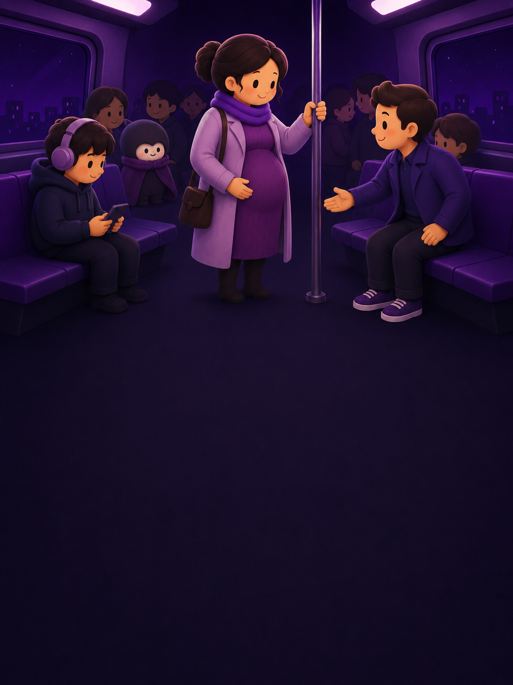
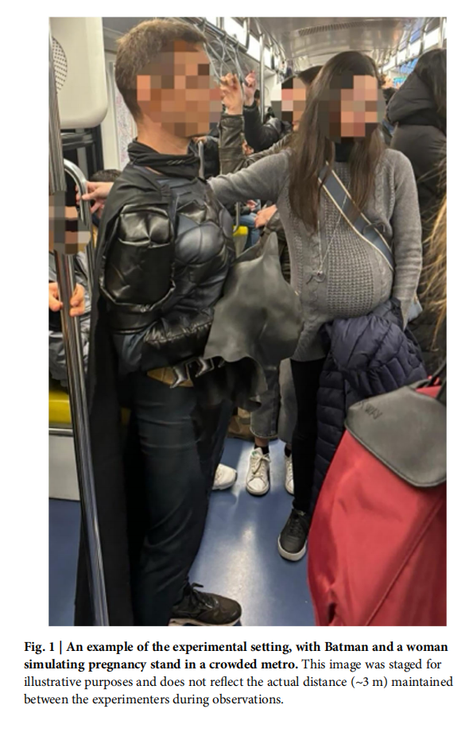
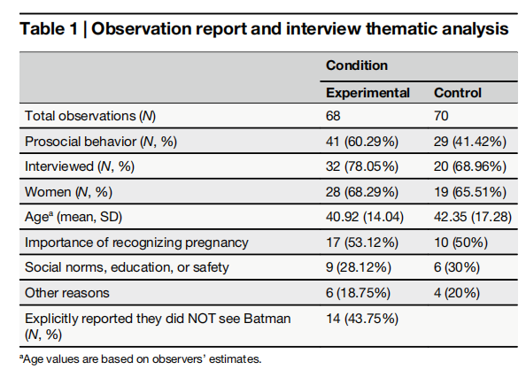

在拥挤的车厢里，
你会让座吗？
我们都经历过这样的时刻：地铁上看到一个需要座位的人——可能是孕妇、老人、或者抱着孩子的父母。你心里闪过一丝犹豫，想着"要不要让"，然后环顾四周，看看其他人会不会先站起来。
让座，看似是一个简单的举动，但它其实属于心理学中一个重要的概念——亲社会行为（prosocial behavior），也就是那些自愿帮助他人、不求回报的行动。这种行为对社会运转至关重要，但它的触发条件远比我们想象的要复杂。
大多数时候，我们以为让座取决于一个人的品德、教养或者当下的心情。但一组意大利心理学家提出了一个更大胆的问题：
如果一个穿着蝙蝠侠战衣的人突然出现在地铁车厢里，会不会让更多人愿意让出座位——即使他们根本没注意到蝙蝠侠的存在？
这个听起来像都市传说的设定，其实是一场严谨的心理学现场实验。而它的结果，可能会改变你对"善意从何而来"的理解。
这项研究靠谱吗？
Nature 子刊
一场精心设计的
地铁实验
研究者在米兰地铁上设计了一个准实验（quasi-experiment），用最自然的方式观察：在真实的车厢里，人们会不会因为一个意外事件而变得更乐于助人。
整场实验的逻辑很简洁，但每一步都经过严格的设计和控制：
设定场景
一位女实验员戴上假孕肚，装扮成孕妇登上地铁。车厢座位全满，确保有人需要让座。
操纵变量
在实验条件下，另一位实验员穿上蝙蝠侠战衣（不戴面具，避免惊吓乘客），从约3米外的另一扇门进入同一车厢。两人不互动。
观察记录
隐藏的观察者记录是否有人让座，并对让座者进行简短访谈——你为什么让座？你注意到蝙蝠侠了吗？
对比分析
两组同时进行（不同车厢），每站约2–4分钟，然后下车换乘下一班，共完成138次有效观察。
蝙蝠侠的出现，
改变了什么？
这是整篇论文唯一但核心的现场实验。研究者的假设很直接：一个意外出现的、穿着超级英雄服装的人，会打破车厢里乘客的"日常自动驾驶模式"，让他们更关注周围环境和他人的需求——从而更可能让座。
实验对比了两种情境：
无其他干预
70次观察
蝙蝠侠从另一扇门进入
68次观察
参与者和样本
米兰地铁真实乘客，138次乘车观察（对照组70次，实验组68次）。每次观察要求车厢座位全满、站立者不超过5人，确保乘客有机会注意到孕妇和蝙蝠侠。让座者中女性约占68%，平均年龄约41–42岁（观察者估算）。
测量什么
主要指标：是否有乘客让座（是/否）。次要指标：让座原因访谈（识别怀孕、社会规范/教养/安全、其他原因）；实验组额外询问是否看到蝙蝠侠。
关键伦理设计：蝙蝠侠扮演者不戴完整面具（上半脸露出），避免惊吓乘客。两者始终保持约3米距离且不互动，排除"表演效应"的干扰。

原论文 Fig. 1。此图为示例摆拍，展示蝙蝠侠与模拟怀孕的女性实验员在拥挤车厢中的场景。实际观察中，两人保持约3米距离且无互动。
看不见的蝙蝠侠，
看得见的善意增长
让座率近乎翻倍
对照组让座率 37.66%，实验组（蝙蝠侠在场）飙升至 67.21%。逻辑回归显著：χ²(1)=12.088, p < 0.001。
OR = 3.393 p < 0.001近半数让座者没看到蝙蝠侠
实验组让座的乘客中，43.75% 的人明确表示 没有看到蝙蝠侠。没有一个人将自己的让座行为归因于蝙蝠侠的存在。
让座原因几乎一致
两组让座者的口头理由高度相似：约53%提到"识别出怀孕"，约28–30%提到社会规范或安全考量。这说明蝙蝠侠并没有改变人们说出来的理由。
让座者画像基本不变
两组让座者中女性均占约68%，平均年龄约41–42岁。蝙蝠侠的介入并没有改变"谁更可能让座"的人群特征，只是提高了整体概率。

原论文 Table 1。汇总了两组条件下的观察次数、让座行为、访谈人数、性别比例、年龄估算及让座原因分类。
这对我们的日常生活
意味着什么？
打破"自动驾驶"可能是关键
研究者认为，意外事件的作用机制是中断日常行为脚本——当你不再机械地刷手机或发呆，你会更有可能注意到身边需要帮助的人。这不一定是"正念"，更可能是"注意力被意外唤醒"。
善意可以在人群中传播
43.75%的让座者没看到蝙蝠侠却仍然让了座——一个合理的解释是"社会传染"：少数人被意外事件唤醒后，他们的行为变化（站起、让座、关注周围）影响了身边更多人，形成了一条善意的连锁反应。
公共空间需要"积极的意外"
如果你想让城市变得更友善，也许不需要贴更多的标语、喊更多的口号。在公共场所设置温和的意外元素——一面涂鸦墙、一段即兴音乐、一个有趣的街头艺术——或许就能潜移默化地提升人们的亲社会倾向。
保持谨慎：这不一定是蝙蝠侠的"超能力"
研究者也坦诚地指出了替代解释：蝙蝠侠作为文化符号可能启动了"英雄/骑士精神"的联想；或者仅仅是"意外感"而非特定的超级英雄形象起到了作用。未来需要测试小丑、马里奥、或者一个穿着奇怪外套的普通人，看看效果是否等价。
只需一个意外，
就能唤醒我们本就拥有的善意。
写在最后
这项来自意大利米兰地铁的现场实验，用一个大胆又充满趣味的设计告诉我们：亲社会行为不一定是深思熟虑的结果——它可能只是某个意外事件带来的"注意力重启"。
当我们的生活被日常惯例填满——通勤、刷手机、赶路——我们对外界的感知其实处在一种半自动的"省电模式"中。而一个足够意外、但不具威胁的刺激（比如一个穿着蝙蝠侠战衣的人出现在地铁上），可以将我们的注意力短暂地拉回"当下"，让我们重新看到身边的人，重新意识到他们的需要。
当然，这只是一项单一研究的发现，并非所有意外事件都会产生正面效果。研究者也坦承，蝙蝠侠的正面文化象征可能起到了启动效应，替代解释需要更多实验来排除。但这项研究的核心价值在于它提出了一个值得深思的方向——
也许不需要说教、不需要呼吁——
一个恰到好处的"意外"，可能就够了。